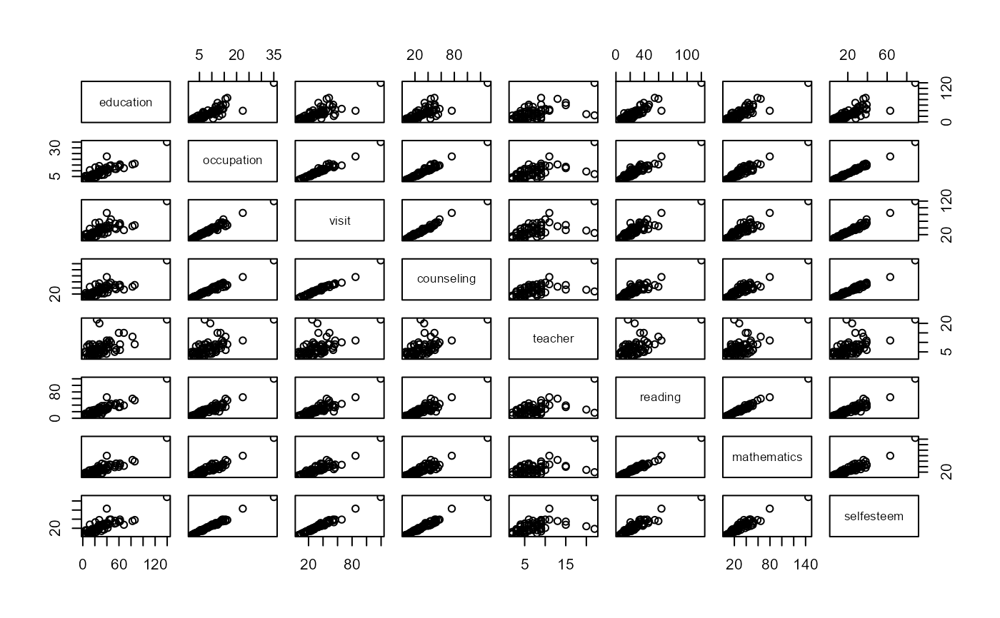
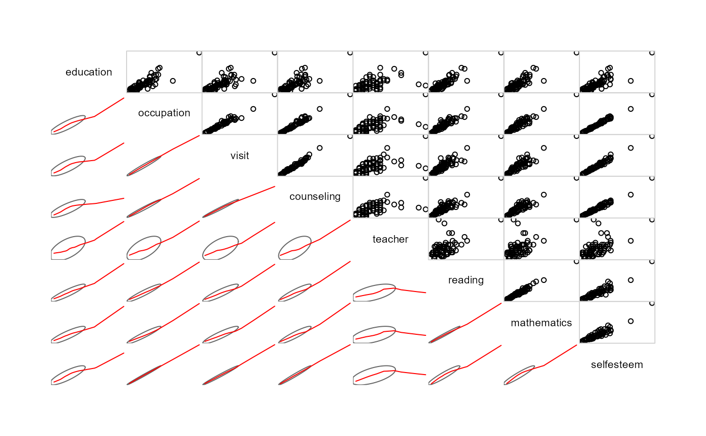
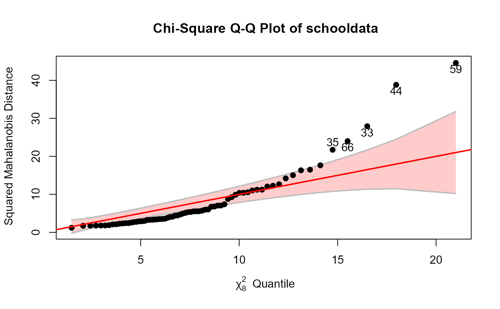
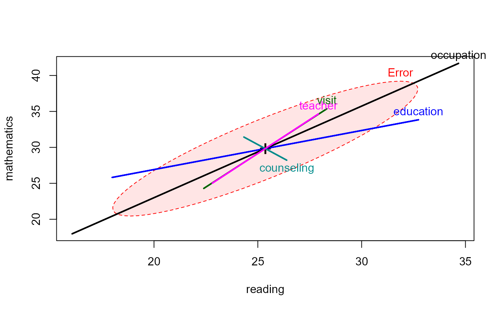

School Data, from Charnes et al. (1981). The aim is to explain scores on 3
different tests, reading, mathematics and selfesteem
from 70 school sites by means of 5 explanatory variables related to parents
and teachers.
Format
A data frame with 70 observations on the following 8 variables.
educationEducation level of mother as measured in terms of percentage of high school graduates among female parents
occupationHighest occupation of a family member according to a pre-arranged rating scale
visitParental visits index representing the number of visits to the school site
counselingParent counseling index calculated from data on time spent with child on school-related topics such as reading together, etc.
teacherNumber of teachers at a given site
readingReading score as measured by the Metropolitan Achievement Test
mathematicsMathematics score as measured by the Metropolitan Achievement Test
selfesteemCoopersmith Self-Esteem Inventory, intended as a measure of self-esteem
Source
A. Charnes, W.W. Cooper and E. Rhodes (1981). Evaluating Program and Managerial Efficiency: An Application of Data Envelopment Analysis to Program Follow Through. Management Science, 27, 668-697.
Details
This dataset was shamelessly borrowed from the FRB package.
The relationships among these variables are unusual, a fact only revealed by plotting.
Examples
data(schooldata)
# initial screening
plot(schooldata)

# better plot
library(corrgram)
corrgram(schooldata,
lower.panel=panel.ellipse,
upper.panel=panel.pts)

#fit the MMreg model
school.mod <- lm(cbind(reading, mathematics, selfesteem) ~
education + occupation + visit + counseling + teacher, data=schooldata)
# shorthand: fit all others
school.mod <- lm(cbind(reading, mathematics, selfesteem) ~ ., data=schooldata)
car::Anova(school.mod)
#>
#> Type II MANOVA Tests: Pillai test statistic
#> Df test stat approx F num Df den Df Pr(>F)
#> education 1 0.37564 12.4337 3 62 1.820e-06 ***
#> occupation 1 0.56658 27.0159 3 62 2.687e-11 ***
#> visit 1 0.26032 7.2734 3 62 0.0002948 ***
#> counseling 1 0.06465 1.4286 3 62 0.2429676
#> teacher 1 0.04906 1.0661 3 62 0.3700291
#> ---
#> Signif. codes: 0 '***' 0.001 '**' 0.01 '*' 0.05 '.' 0.1 ' ' 1
# HE plots
heplot(school.mod, fill=TRUE, fill.alpha=0.1)

pairs(school.mod, fill=TRUE, fill.alpha=0.1)

# robust model, using robmlm()
school.rmod <- robmlm(cbind(reading, mathematics, selfesteem) ~ ., data=schooldata)
# note that counseling is now significant
car::Anova(school.rmod)
#>
#> Type II MANOVA Tests: Pillai test statistic
#> Df test stat approx F num Df den Df Pr(>F)
#> education 1 0.39455 12.8161 3 59 1.488e-06 ***
#> occupation 1 0.59110 28.4301 3 59 1.683e-11 ***
#> visit 1 0.23043 5.8888 3 59 0.0013819 **
#> counseling 1 0.25257 6.6456 3 59 0.0006083 ***
#> teacher 1 0.09812 2.1395 3 59 0.1048263
#> ---
#> Signif. codes: 0 '***' 0.001 '**' 0.01 '*' 0.05 '.' 0.1 ' ' 1
# Index plot of the weights
wts <- school.rmod$weights
notable <- which(wts < 0.8)
plot(wts, type = "h", col="gray", ylab = "Observation weight")
points(1:length(wts), wts,
pch=16,
col = ifelse(wts < 0.8, "red", "black"))
text(notable, wts[notable],
labels = notable,
pos = 3,
col = "red")
 # compare classical HE plot with that based on the robust model
heplot(school.mod, cex=1.4, lty=1, fill=TRUE, fill.alpha=0.1)
heplot(school.rmod,
add=TRUE,
error.ellipse=TRUE,
lwd=c(2,2), lty=c(2,2),
term.labels=FALSE, err.label="",
fill=TRUE)
# compare classical HE plot with that based on the robust model
heplot(school.mod, cex=1.4, lty=1, fill=TRUE, fill.alpha=0.1)
heplot(school.rmod,
add=TRUE,
error.ellipse=TRUE,
lwd=c(2,2), lty=c(2,2),
term.labels=FALSE, err.label="",
fill=TRUE)